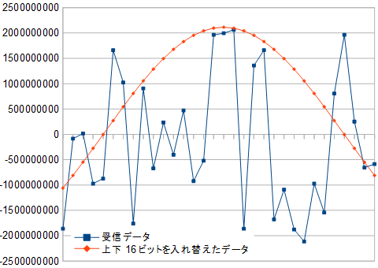

STM32 I2S DMA利用時の32ビット対応
2019年04月02日 カテゴリー：STM32
たいていのオーディオコーデックICでは、24ビットや32ビットのデータを取り扱うことができます。Owm Pedalは16ビットに設定していましたが、32ビットに対応できるよう変更します。
リファレンスマニュアルによると、I2Sで32ビットデータを取り扱うには16ビットずつデータ転送する必要があります。DMAは16ビット（Half Word）設定のままでうまく処理するようです。しかしここで問題があり、上位16ビットと下位16ビットが入れ替わって送受信されてしまいます。STM32のコミュニティで質問されていましたが、修正するには自分でビットを入れ替えるコードを書くしかないようです。
単純に元の数を左シフトしたものと右シフトしたものを合わせればいいのですが、負の数を右シフトすると左側が1で埋まるので、0で置き換えるようにします。
int32_t swap16(int32_t x)
{
return (0x0000FFFF & x >> 16) | x << 16;
}
符号なし整数へ型変換してから右シフトする方法もあります。処理速度は上記と変わりませんでした。
int32_t swap16(int32_t x)
{
return (int32_t)((uint32_t) x >> 16) | x << 16;
}
その他の変更部分については下記の通りです。
・STM32CubeMX設定
Multimedia→I2S2→Configuration→Parameter Settings
→Data and Frame Format [32 Bits Data on 32 Bits Frame]
・送受信バッファを32ビット整数へ
volatile int32_t RX_BUFFER[BLOCK_SIZE*2] = {}; // 受信バッファ
volatile int32_t TX_BUFFER[BLOCK_SIZE*2] = {}; // 送信バッファ
・float変換時の乗除算に使う数を変更（32ビット符号付き整数の範囲は-2147483648～+2147483647）
32768.0f→2147483648.0f
Owm Pedalに正弦波を入力し、実際のデータで確認しました。DMAで受信したデータはバラバラの値ですが、上下16ビットを入れ替えると正しいデータになることがわかります。

GitHubのmain.cファイルも変更しています。オーディオコーデックV4220Mでは上位24ビット分のみ有効なので、下位8ビット分は0として取り扱われますが特に支障はないでしょう。